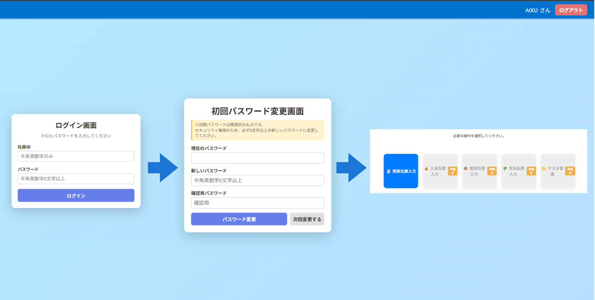
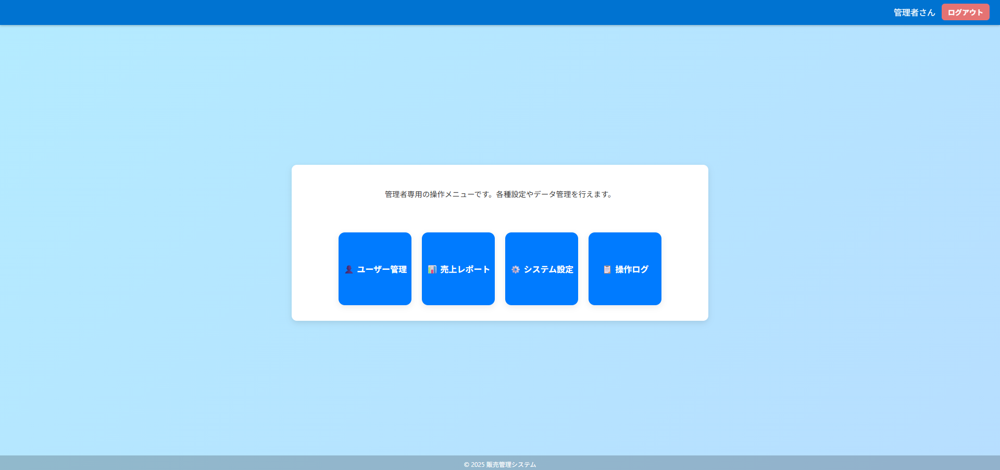

販売管理システム
Laravel × MySQLで構築した業務効率化システム

ログイン画面：初回パスワード変更機能付き

管理者画面：売上・在庫・ユーザー管理などを統合予定。現在設計中です。

業務選択画面：付箋機能やショートカットキーなど操作性にこだわりました
概要
前職で感じた業務上の課題をもとに、効率化と使いやすさを重視して開発した販売管理システムです。
ログイン機能や初回パスワード変更、管理者画面など、実際の業務運用を想定した設計を取り入れています。
伝票入力画面では、ファンクションキーによるショートカット操作を実装し、Windowsアプリケーションに近い操作感をWebアプリで再現することを目指しました。
主な機能
- ログイン認証（社員ID＋初期パスワード）
- パスワード変更・初回変更フラグ
- ユーザー管理（管理者のみアクセス可能）
- 操作ログ・レポート管理（現在設計中）
- 売掛伝票入力（行番号・スクロール・集計欄付き）
技術構成
| フレームワーク | Laravel 10 |
|---|---|
| データベース | MySQL（Railway連携） |
| デプロイ | Render |
| 開発環境 | VS Code / GitHub / Windows |